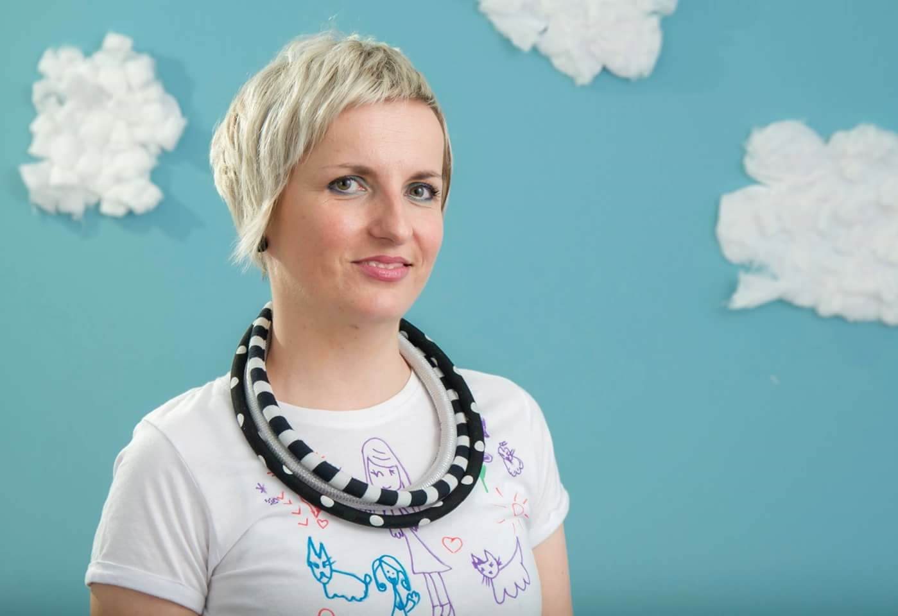
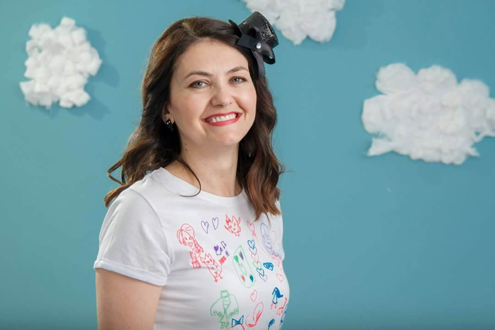
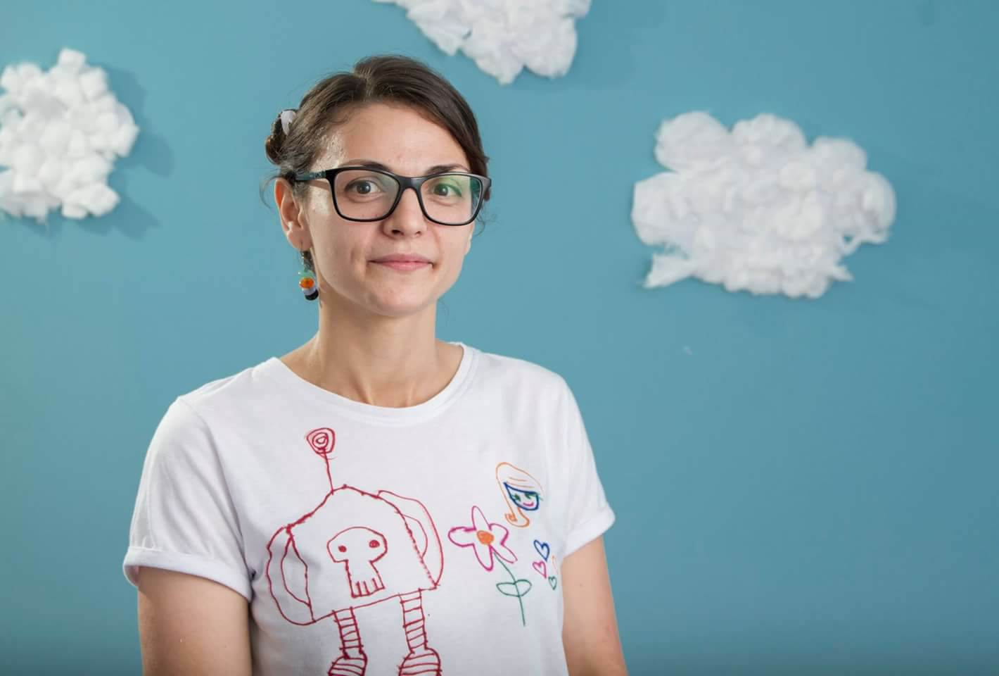

O NAMA
Sovice su nastale 2013. godine kada su Berina i Elma, nakon pet godina, prestale raditi u Centru za rani rast i razvoj (CRRR) kroz koji su stekle veliko iskustvo vodeći radionice za djecu predškolskog uzrasta i radionice za roditelje. Bile su dio multidisciplinarnog tima kojeg su činili, psiholozi, pedagozi, socijalni radnici, pedijatri, ginekolozi, koji su pružali usluge za preko 500 korisnika.
Mnoge edukacije, svjetskih stručnjaka, koje smo prošle kroz CRRR, ali i bazično obrazovanje kroz studij Psihologije, ukazivale su na važnost ranog rasta i razvoja djece (0-8 god.) kao jednog od najvažnijih perioda u životu svakog čovjeka. Mozak se tada najbrže razvija i ima veliki kapacitet za promjene. Znajući za ogroman utjecaj edukacije djece u najranijoj dobi na njihov cjelokupni život, i rezultate koje kvalitetna edukacija može polučiti, odlučile smo se pokretanje vlastitog biznisa i otvorile Edukativni centar Sovice.
Želja nam je bila da nastavimo da podstičemo razvoj urođenih potencijala i oblikujemo lični identitet svakog djeteta postizanjem sklada između intelektualnog i emocionalnog razvoja.
U Sovicama se puno radi na odnosima, empatiji, povjerenju, uči se kroz igru, bilda samopuzdanje djece, smije, pleše i zabavlja.
Fokus stavljamo na prave životne vrijednosti kao i na postavljanje realnih granica u odgoju djece. Pomažemo djeci da donose dobre odluke kroz poučavanje, ali ne zbog straha od kazne, i pružamo im šansu da uče iz svojih pogrešaka.
Stvaramo optimalne uslove za inspirativnu igru, učenje i rad sa djecom, uključujući i njihove roditelje.
Djecu ne pripremamo samo za period djetinjstva i lakše prihvatanje uloge učenika,već za cijeli život i ličnu sreću.
Presretne smo što, uz tim koji dijeli istu viziju i filozofiju Sovica, možemo djeci da pružimo okruženje ispunjeno osjećajem pripadnosti, sigurnosti, povezanosti, uvažavanja, razigranosti, ali i strukture.
Zahvalne smo svim porodicama koje su dopustile da budemo dio njihovih života. Hvala vam što ste omogućili da snovi Sovica žive!
ELMA, VLASNICA I DIREKTORICA ZA KVALITETU

Volim raditi sa malom djecom, jer su brzo vidljivi rezultati nakon uloženog truda, što nije bio slučaj na prethodnim radnim mjestima. Pored toga istinski uživam u njihovoj znatiželji, iskrenosti, individualnosti i želji za usvajanjem novih stvari. Jako me privlači dinamično i kreativno okruženje, gdje svakodnevno imate priliku da plešete, zabavljate se, nasmijete do suza i probudite dijete u sebi.
Najviše volim pažnju usmjeriti na art projekte i istim temama dati notu novog i svježeg, kako sadržaj ne bi bio monoton. Ispunjava me i rad sa roditeljima, posebno tematika povezanosti između stila privrženosti i doživljaja sebe i drugih. Ovaj posao daje priliku da i vi kao edukator, zajedno sa djecom, rastete i razvijate se svaki dan i po tome bih rekla da je magičan.
“Doing what you like is freedom, liking what you do is happiness.” ☺
BERINA, VLASNICA I IZVRSNA DIREKTORICA

Još odmalena sam bila jako usmjerena na odnose među ljudima, njihove emocije i komunikaciju. Ne znam da li je razlog tome što sam odrasla u mnogočlanoj porodici, okružena roditeljima, bratom i dvije starije sestre ili u genetskoj predispoziciji koju nosim i sa očeve i mamine strane za učiteljski tj. pedagoško – psihološki poziv ali sam se, na prvi susret, zaljubila u rad sa djecom.
Učenje o okolini, nama samima i svijetu koji nas okružuje na najzanimljivije načine kroz eksperimente i naučne projekte su moje omiljene teme rada s mališanima. Njihovo poimanje svijeta, čiji su aktivni sudionici, svaki put me iznova fascinira. Slobodna, aktivna i vesela igra kroz poligone na otvorenom, timske igre i igre u parovima, takmičarske igre koje zahtijevaju poštivanje pravila i jačaju samokontrolu su aktivnosti u kojima beskrajno uživam. Pjesma i ples su najbolji način da se uljepša i najtmurniji dan i oboji bojama veselja i ljubavi.
Djeca me uče kako biti bolja osoba. Zahvalni su za tako male stvari, nesebično šire svoju pozitivnu energiju i tako su logični U svakodnevnom druženju s njima podsjećaju me na izvorne ljudske vrijednosti – iskrenost, neposrednost, autentičnost, zaigranost, uživanje u momentu... Sretna sam što radim posao koji neizmjerno volim, jer pomažući drugima na njihovom putu učenja i razvoja, učimo i mi, ali mijenjamo i sam svijet. Jer, „um nije posuda koju treba napuniti, već vatra koju treba zapaliti“.
LELA, VODITELJICA GRUPE
A

Biram da radim sa djecom, jer vjerujem da se najvažnije ljudske osobine i vrijednosti - samosvjesnost, samokontrola, emocionalna inteligencija, kako biti sretan, društvena interakcija, rješavanje problema, saradnja, pregovaranje, empatija, tolerancija, fleksibilnost, samostalnost - mogu učiti i to već u najranijoj dobi.
Ja se ne osjećam kao da svaki dan idem na posao. Ja dolazim na mjesto gdje se igram, plešem, zezam, sa djecom istražujem svijet, bivam kreativna, upoznajem vlastite mehanizme nošenja sa raznim situacijama, postajem emocionalno inteligentnija osoba, konstantno učim, istražujem i razvijam se u mnogo razlicitih polja. A od djece dobijem i iskrenu zahvalnost za sva znanja koja im pružim.